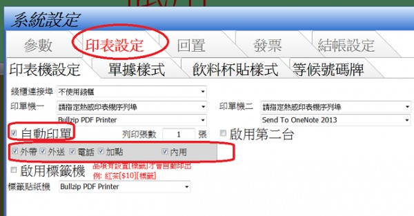

第二螢幕鼠標、內用自動印單
1. 我使用雙螢幕，但只有第一螢幕可以用指頭觸控點餐，第二螢幕觸控時無法把鼠標從第一螢幕帶過來，無法按到<全部出餐>，按到的都是第一螢幕的功能。目前只有使用滑鼠才能把它帶過來。
2. 我的餐廳是採用先結帳後備餐旳方式，所以備餐畫面最底下<內用桌完成送餐(待付款)>的文字不符我們的實情，不知如何消除。
3. 印表設定外帶內用都能自動印單，但目前只有外帶會自動印單，而內用不會，不知我的設定有何問題？
1 個回答
您好
1.請參考
2.內容是固定 無法變更
3.內用列印設定必需打勾

如果還是不行 可否貼上"印表設定"的設定畫面?
貼圖方法